← ALL SERIES
Geometry of Silence
Buildings stripped back to line, plane and interval, with nobody in the frame to hurry them.
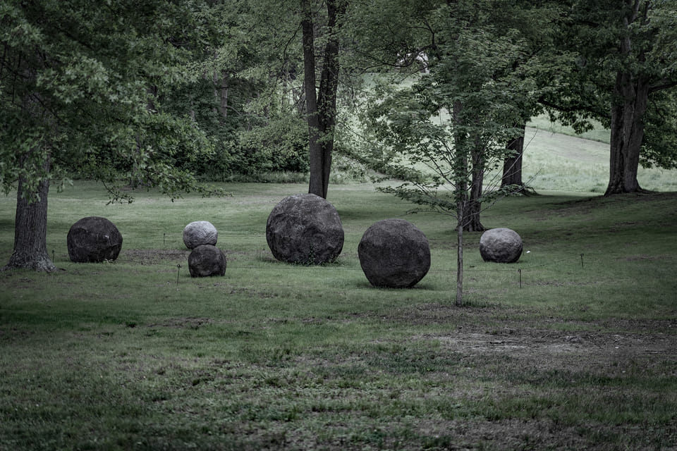
Geometry of Silence № 1
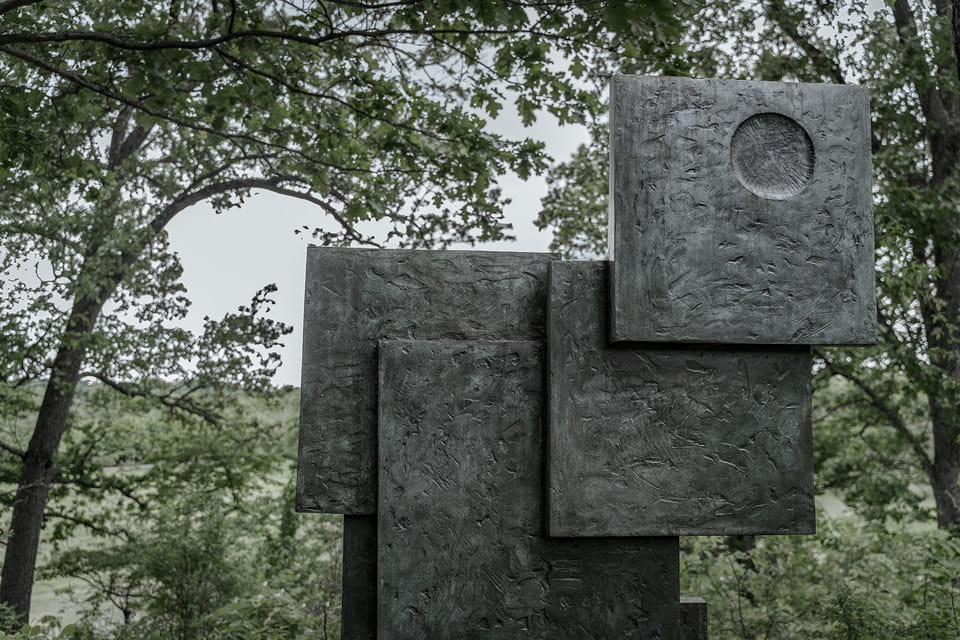
Geometry of Silence № 2
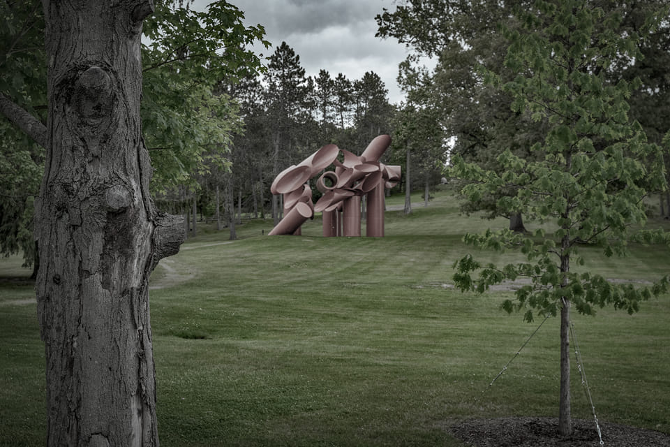
Geometry of Silence № 3
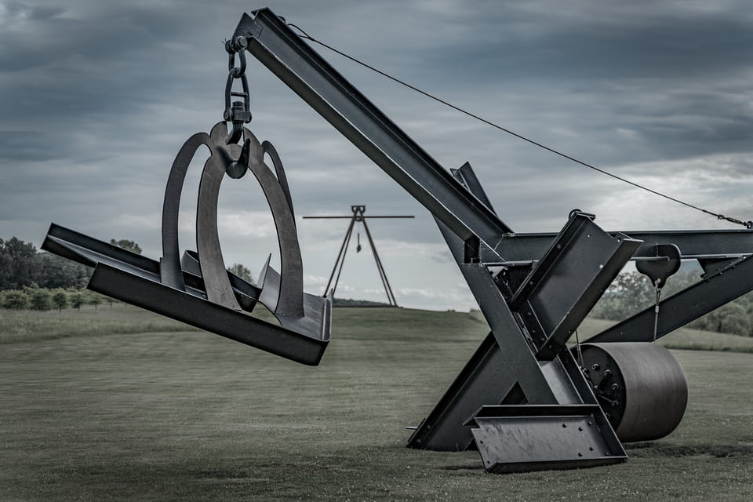
Geometry of Silence № 4
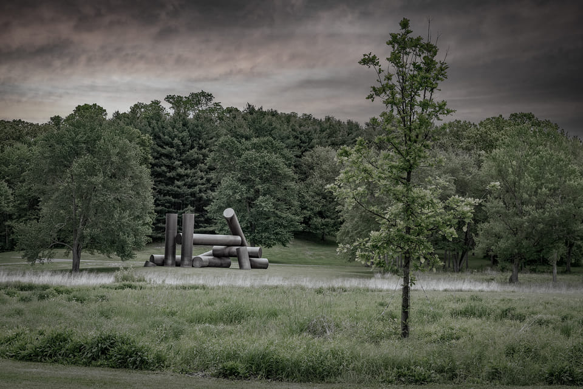
Geometry of Silence № 5
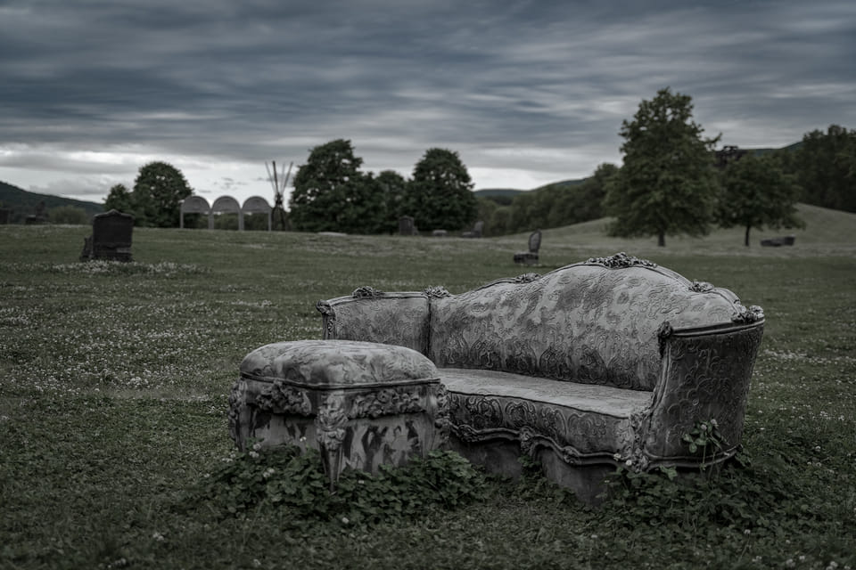
Geometry of Silence № 6
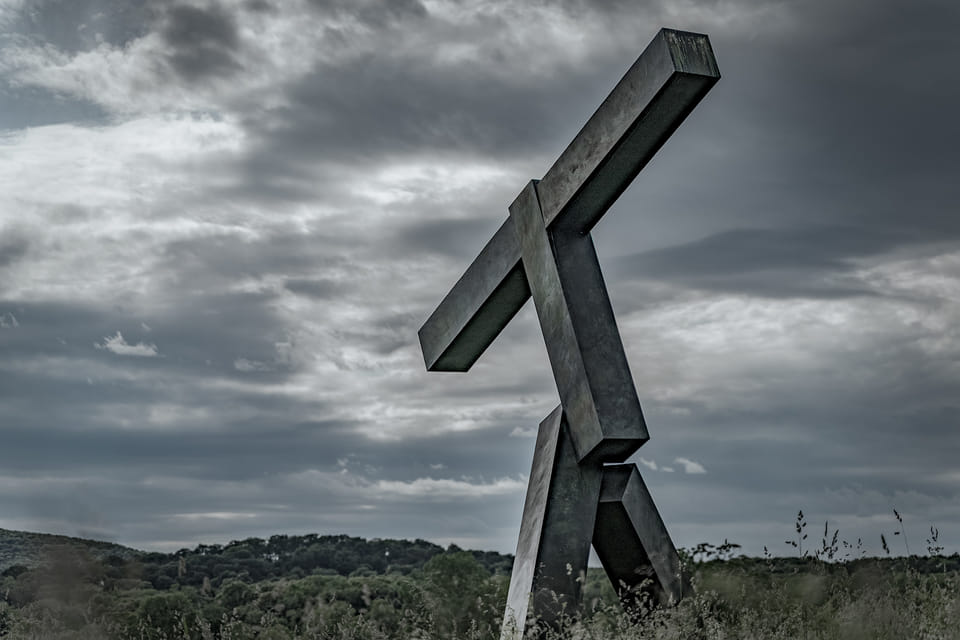
Geometry of Silence № 7
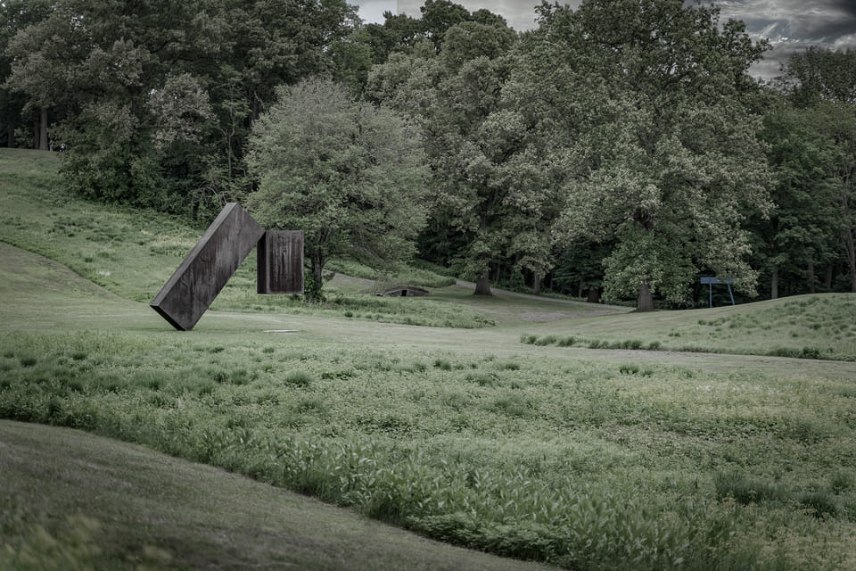
Geometry of Silence № 8
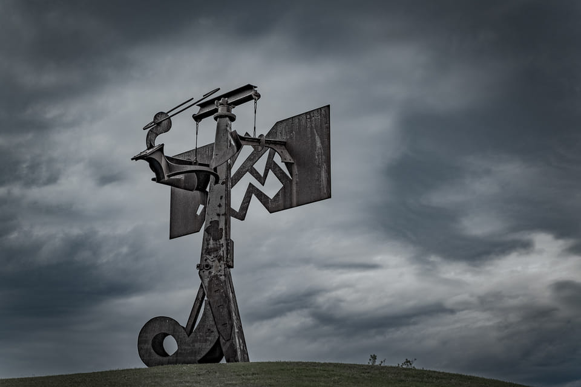
Geometry of Silence № 9
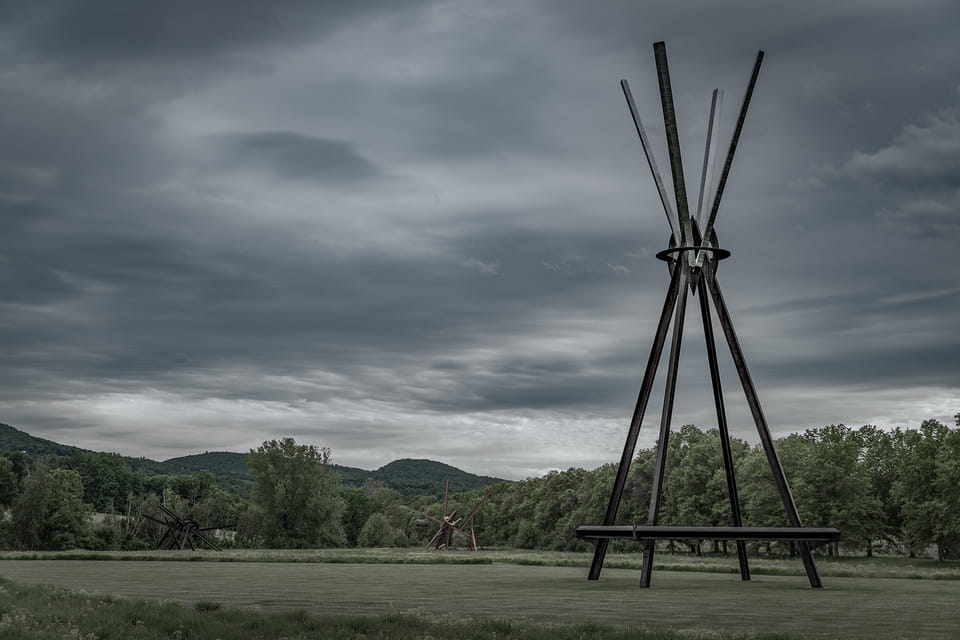
Geometry of Silence № 10
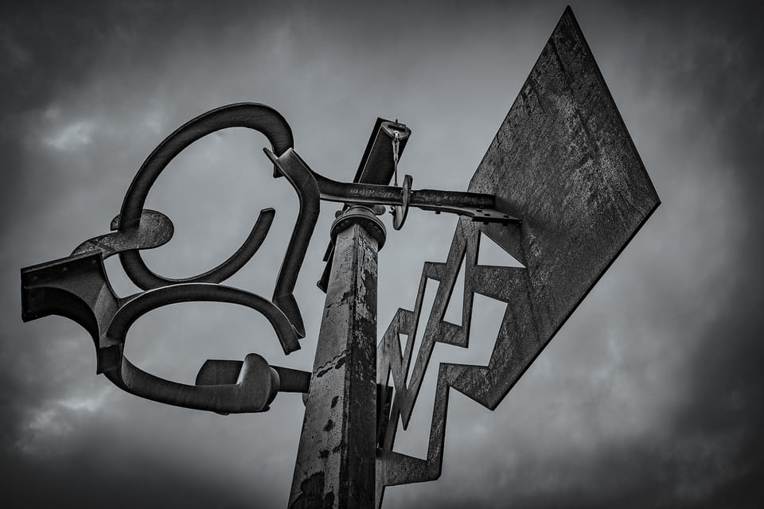
Geometry of Silence № 11
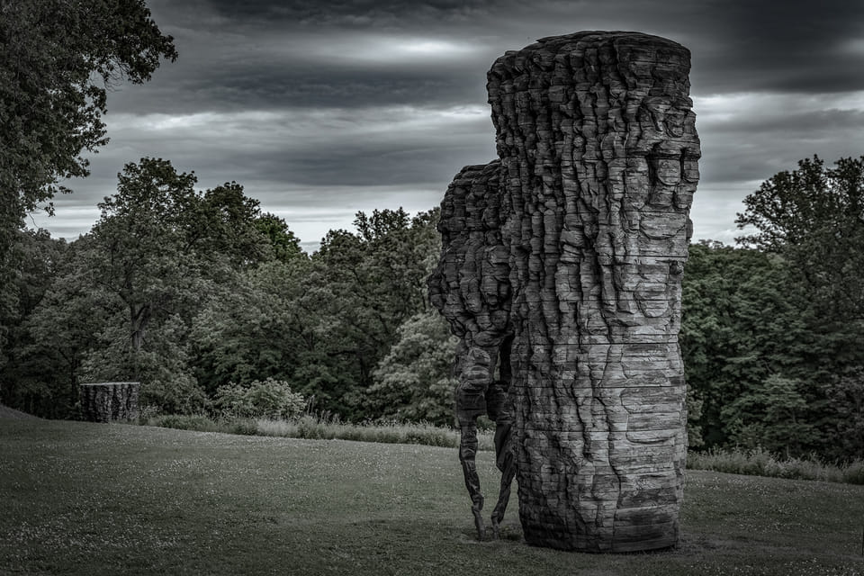
Geometry of Silence № 12
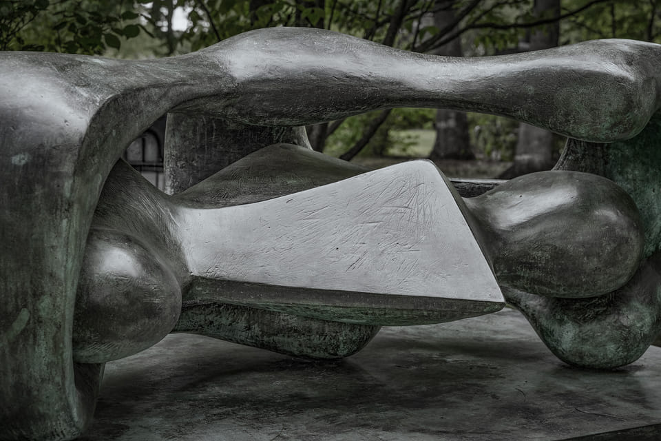
Geometry of Silence № 13
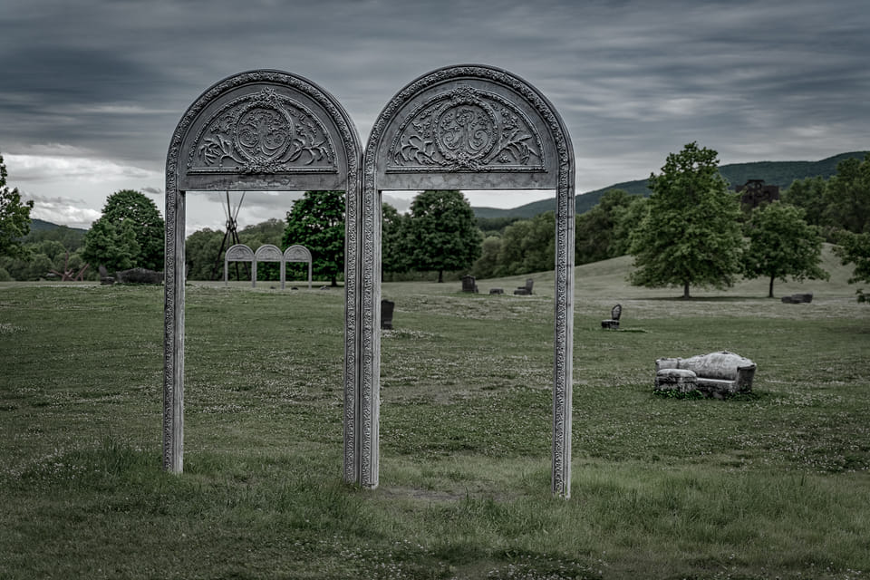
Geometry of Silence № 14
Any photograph in this series can be printed and signed to order. Add it to your selection.